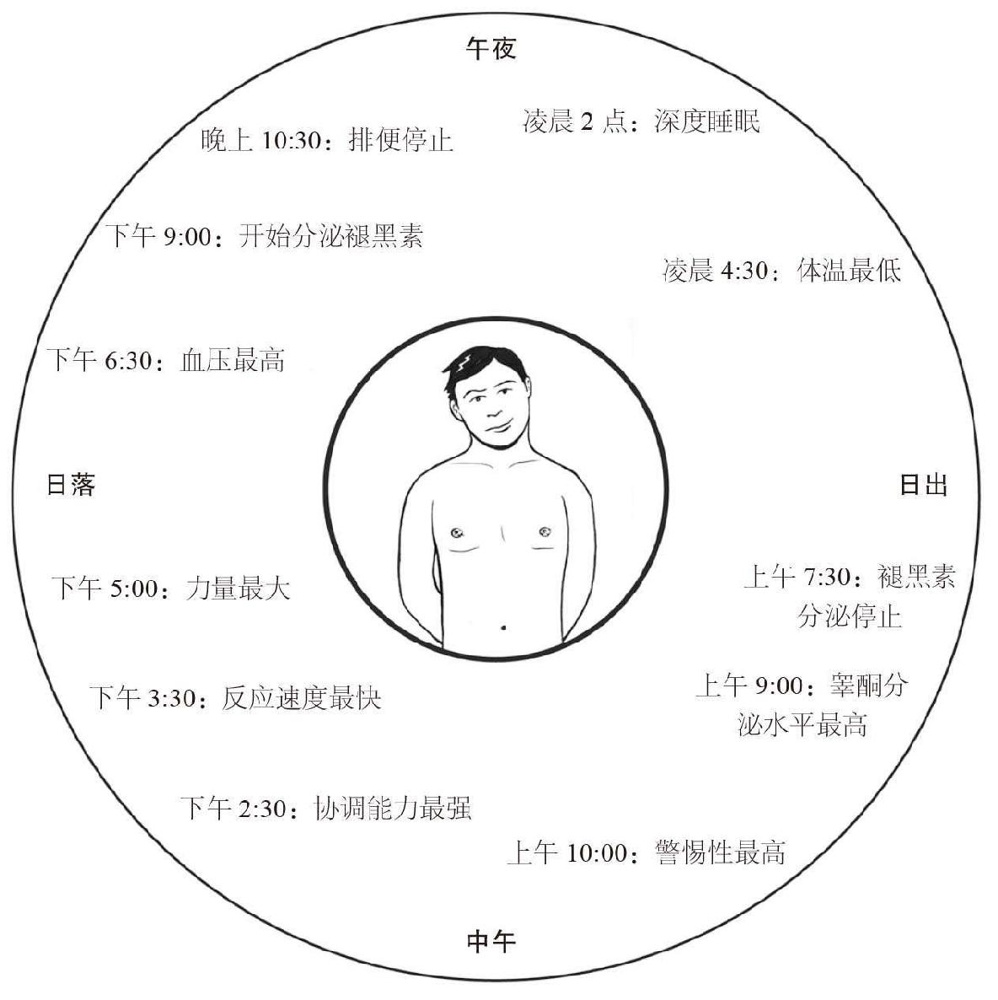

我们体内的生物钟能让身体保持自己的节奏，因此，在不同时刻我们对时间会有不同的体验。
“若一个男人和一个漂亮女人在一起，一小时就像一分钟；但若让他坐在火炉旁，一分钟比一小时还漫长。这就是相对论。”
——阿尔伯特·爱因斯坦（1879—1955）
正如爱因斯坦的名言，度过时间的方式不同，人们对时间的感觉也不同。一个简单的经验是开心时时间过得飞快，痛苦时则会很慢。如此看来，我们对时间的体验其实很主观，由我们的生活经历以及对现在、过去和未来的期望所决定［虽然精神学专家埃克哈德·托尔（Eckhard Tolle）说没有什么曾发生在过去，也不会发生在将来，一切都在当下］。
有些人在工作头几天会感觉任务很难完成，时间过得很慢。但当他们对工作逐渐适应后，则会感觉时间过得比较快。另外一些人则正好相反，哪怕他们完成任务的速度其实一直都保持不变。
我们年纪越大，感觉时间过得越快，这是因为我们的很多经历是熟悉和重复的。但当你回顾童年漫长的夏天，六周可能感觉像永远那么长，因为一切都那么新鲜有趣。在不同寻常或充满危险的情况下，我们会感觉时间变慢，一切都像是慢动作。服刑的囚犯感觉每一天都过得十分缓慢，日子之间没有缝隙，因为他们的生活几乎每天都一样。
我们的生活节奏或速度取决于诸多因素：在哪里生活，村庄、小镇、城市还是田园？做什么工作？有什么爱好？我们的朋友是谁？诸如此类。纽约证券交易所交易员和堪萨斯州农民虽然处在同一时区，生活节奏却迥然不同（第6章曾介绍过如今钱的流通速度非常快）。
人们普遍认为北半球生活节奏比南半球快得多，北半球属瑞士和德国的生活节奏最快。
成年健康男子的心跳速率约为60次/分钟，女子则稍快。我们的呼吸速率也比较稳定，但随年纪增长而减慢：新生儿可达到60次/分钟，而睡眠中的成年人则不会超过14~18次/分钟。
身体的消化过程和能量需求保证我们会定期感觉饥饿，需要进食，这是人类日常生活中最明显的规律性行为。除此之外，人类还有很多其他根据时间变化而产生的更为复杂的规律性行为，统称为“昼夜节律”。
世界上大多数植物和动物按照它们自己的昼夜节律生活，这些节律大部分根据光照（将我们跟太阳相关联）而交替。人类的昼夜节律由我们大脑中小小的“视交叉上核”控制。此上核位于大脑中线、鼻梁后方的位置，是我们身体的“主时钟”。我们体内还有其他“外围时钟”，它们独立于主时钟而运行，位于肺部、肝脏、胰腺、皮肤和其他系统中。
人类是单相睡眠者，即夜睡昼醒。多相睡眠者在24小时内多次重复“休息—活动”的模式。普遍认为，我们早期的祖先是多相睡眠者，大约在公元前7万年至公元前4万年转变为单相睡眠者。此后我们的生物钟也开始遵循单相模式。
生活规律的人在上午10点左右警惕性最高，下午2:30左右协调能力最强，下午3点反应速度最快，下午5点心血管效率最高、肌肉力量最大，下午6:30血压最高，下午7点血液温度最高，晚上9点我们开始分泌褪黑素（引起困意，降低体温）。褪黑素随着年龄的增长分泌减少，所以成年人需要的睡眠比儿童少。晚上10:30排便停止，凌晨2点睡眠最深，凌晨4:30我们的体温最低，上午7:30左右褪黑素停止分泌，人类开始清醒，上午8:30排便开始，上午9点睾酮 [1] 分泌达到最高水平，上午10点左右警惕性再次恢复到最高水平。

这些节奏会根据我们的作息和太阳光照时间不同而进行调整，因此我们生活的地方和所处的季节也会对这些节奏产生影响。如果我们飞到不同时区，体内的生物钟会被打乱，就会产生时差反应，此时就需要通过睡眠来补偿身体所经历的时差。在长途旅行中睡觉是解决时差问题的好方法，它会让身体在到达新时区时误以为夜间已经享有了本该有的睡眠。很多晚上工作白天睡觉的人根本无法调整到正常模式，主要是因为无论我们如何作息，褪黑素只在夜间分泌。
女性体内还有另一个特别的时钟，即生理周期，从青春期到更年期约每28天出现一次。
20世纪30年代，睡眠研究学者纳撒尼尔·克莱德门（Nathaniel Kleitman）和他的同事布鲁斯·理查森（Bruce Richardson）进行了一项实验。他们在肯塔基州的猛犸洞 [2] 住了32天，通过避免光照来扰乱生物钟。此外，他们还调整了白天的长度，将一天24小时变为28小时，从而将一周变为6天而非7天。他们的生活极为规律，每天在固定的时间吃饭、锻炼、睡觉，睡9个小时，醒19个小时。43岁的克莱德门很难适应一天28小时、每周6天的生活，但相对年轻的理查森则稍微好一些。实验结果最终并未得出任何有效结论。不过克莱德门“发现”了快速眼动（Rapid Eye Movement，REM）与做梦和大脑活动之间的联系。
加速衰老
早衰综合征（Progeroid syndromes，PS）是一种罕见的遗传病，会导致类似衰老的症状。早衰症患者看上去要比实际年龄老，寿命也很可能会比正常人短。沃纳综合征和HG儿童早衰症的症状最接近于自然衰老，因而成为研究最广泛的早衰症。沃纳综合征的全球发病率为十万分之一。
早衰症患者会正常成长到青春期，但不会经历应有的青少年发育急速期。相反，从该阶段起他们身上就会出现生长迟缓和过早衰老的现象。他们不再长高、头发提前变白甚至脱落、皮肤变皱，还可能会出现皮肤萎缩、病变、白内障和严重溃疡以及其他一些少见、难治的症状。早衰症患者很少活过50岁，一般会死于心血管疾病或癌症。